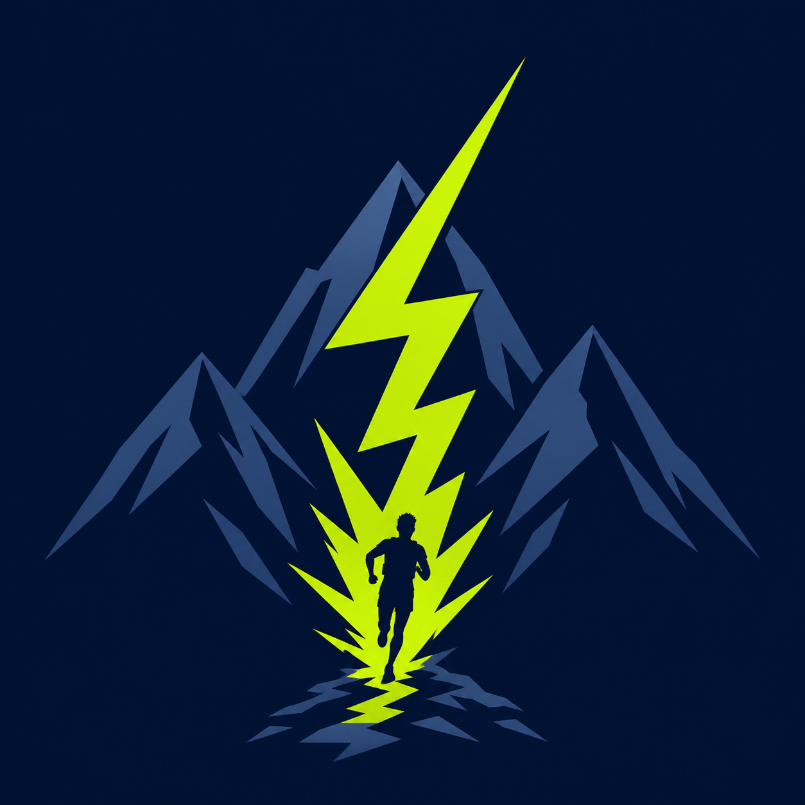

0Vitalité

TON JEU DANS LA VRAIE VIE
IRL LVP UP
⚡
NIVEAU 10 / 100 XP
Débutant audacieux · Chaque petite action compte.
🔥0jours
MISSION CONTROL
Ton système du jour
0/6étapes bouclées
ModeConstruire
À RATTRAPER
Ce qui a besoin d’attention
TON COACH
Le focus du moment
AUJOURD’HUI
Aujourd’hui
🗓️ Rendez-vous & blocs du jour
✅ À faire (hors rendez-vous)
HABITUDES DU JOUR
Mes rituels quotidiens
0Focus
0Équilibre
CAP DE VIE
Mes 3 priorités
RYTHME DU JOUR
Concentration
Choisis un bloc, ferme les distractions, puis reviens ici victorieux.
BOUSSOLE LOCALE
Ton prochain geste
AUJOURD'HUI
Quêtes du jour
MODE CONCENTRATION
Le donjon du focus
25 minutes sans distraction. Une victoire propre.
25:00
Récompense : +25 XP et +1 Focus
DÉFI BONUS
Sortir prendre l'air
10 minutes de marche sans téléphone.
RITUEL DU MATIN
Poser le cap
Une mesure honnête de ton énergie, une intention, puis un geste assez petit pour démarrer.
RITUEL DU SOIR
Fermer la journée proprement
Quelques mots pour remarquer ce qui a marché, déposer le reste et rendre demain plus simple.
MODE ATHLÈTE
Construis un corps capable
Entraîne-toi, mesure, ajuste. La régularité bat les journées parfaites.
COMPAGNON D’ENTRAÎNEMENT
Ta décision du jour
OBJECTIF ULTRA-TRAIL
Base d’endurance
CAP SUR L’OBJECTIF
Objectifs hebdomadaires
🎯 Ton poids cible et son plan (calories, macros, échéance) se règlent dans — onglet Progrès.
0 / 4 séances0%
0 / 10 km0%
CETTE SEMAINE
Ton volume
0séances
0minutes
0km courus
—charge d’effort estimée
Ajoute ta première séance pour lancer la semaine.
PROFIL ATHLÈTE
Ton terrain de jeu
RITUEL D’ENTRAÎNEMENT
Avant et après
Avant · 5 minMarche facile, rotations hanches/épaules, puis une série très légère du premier exercice.
Après · 3 minRespiration calme, marche lente et note rapide de tes sensations.
JOURNAL D’ENTRAÎNEMENT
Dernières séances
SUIVI CORPOREL
Poids
—actuel
—évolution
—cible
COACH POIDS
Mon plan pour atteindre ma cible
📅 Ton poids aujourd'hui
🎯 Poids cible
Servent à estimer ta dépense énergétique (métabolisme).kg
HISTORIQUE LOCAL
Retrouver une séance
PROGRESSION FORCE
Le prochain petit pas
PALMARÈS DE FORCE
Tes meilleures séries
BIBLIOTHÈQUE D’EXERCICES
Force générale & trail
Chaque mouvement propose un format de départ, une illustration et des repères de sécurité. Commence léger et arrête-toi en cas de douleur inhabituelle.
Un plan progressif ciblé sur cette zone, à programmer dans ton agenda.
🎯 Séances ciblées prêtes :
Respecte les filtres zone & matériel actifs.
PROGRAMME AUTO
Mon programme selon mon objectif
Choisis ton objectif : l'app compose toute ta semaine (course + muscu) avec des séances précises, prêtes à lancer en mode guidé.
MOBILITÉ & RÉCUP
Routines guidées
Échauffement, mobilité, étirements, retour au calme — lancés en mode guidé avec minuteur, sans matériel.
Une routine au hasard pour bouger différemment.
COACH INTELLIGENT
Ma semaine d'entraînement
Coche tes objectifs et ton rythme : l'app compose ta semaine complète (muscu / renfo + runs), te sort les exercices de chaque séance, et peut tout programmer dans ton agenda.
💡 Tes révisions BTS se planifient toutes seules à part : page Calendrier → « 🎓 Planning de révision » (choisis tes jours + la date d'examen, les créneaux se posent jusqu'à l'examen).CARBURANT
Nutrition sans obsession
💧 Hydratation du jour0 / 8 verres
💪 Protéines du jour0 / 0 g
CALENDRIER
Planifier la suite
MA SEMAINE À MA MESURE
Coche tes jours d’entraînement (jusqu’à 7)PROGRESSION VISUELLE
Photos privées
ANALYSE
Force & endurance
REVUE HEBDOMADAIRE
Garder le cap sans s’épuiser
TENDANCES PERSONNELLES
Ce que tes données racontent
Des repères locaux pour t’aider à choisir, pas pour te juger.
GRAPHIQUES · 8 SEMAINES
Tes tendances en un coup d’œil
COMPLÉMENTS & RAVITAILLEMENT
Bien utiliser tes compléments
🥛 Whey (Overstims)
- Après la muscu : 1 dose (~25–30 g) dans les 2 h qui suivent.
- Au réveil ou en collation : 1 dose si tu peines à atteindre ta cible du jour.
- Jours de repos : pas indispensable si tes repas couvrent la cible.
- La whey complète l’alimentation, elle ne la remplace pas. Vérifie les grammes de protéines par dose sur ton étiquette Overstims.
🧂 Électrolytes en course
—boisson / heure
—sodium / heure
⏱️ Autour de ta séance
ALIMENTS · REPÈRES
Chercher un aliment
CUISINE DU JOUR
Que manger avec ce que j’ai ?
Ajoute ce que tu as dans le frigo (via la recherche ci-dessus, bouton ＋), choisis ton envie du jour, et je te propose des repas avec ce que tu possèdes.
🧊 Mon frigo
😋 Envie du jour
🛒 Liste de courses
Coche au fur et à mesure ce que tu mets dans le panier :
PROGRAMMES
Ta prochaine séance
RÉCUPÉRATION
Check-in du jour
MESURES & PROGRÈS
Mensurations
MODE COACH
Bilan de la semaine
TROPHÉES
Collection
TON APPLICATION
Réglages
⬆️ Mises à jour
L'app vérifie automatiquement à l'ouverture et en tâche de fond. Tu peux aussi vérifier maintenant — et, quand une mise à jour est prête, l'installer sans attendre le prochain démarrage.
Version —
🎨 Apparence
📣 Faire découvrir
Partage l'app à un ami : un message d'invitation prêt à envoyer (ou copié dans le presse-papier).
🔗 Connexions sportives
Importer tes activités depuis une montre / appli. Chaque service demande une app développeur + une connexion sécurisée (OAuth) — prévu dans la vague sécurité, une fois que tu auras créé les accès.
🟧 StravaBientôtLe plus simple : tu crées une app sur strava.com/settings/api, tu me donnes le Client ID → je branche l'import de tes runs/activités.
🔵 PolarBientôtCompte développeur Polar AccessLink requis.
⌚ GarminPlus tardAPI Health/Activity = programme partenaire sur approbation (difficile en solo).
💾 Sauvegarde & données
Exporte toutes tes données dans un fichier .json (sauvegarde ou transfert vers un autre PC), et réimporte-le quand tu veux. Tout reste local.
📂 Autres réglages
Le point de départ (trajet), les calendriers synchronisés et le planning de révision sont sur la page Calendrier (Agenda → 🗓️ Vue mois).ALLIÉ DE FOND
Rappels de quêtes
Reçois un rappel Windows aux moments où tu veux reprendre l’aventure.
OBJECTIF ALTERNANCE
Décroche ton alternance
Le nerf de la guerre : postuler, chaque jour. Ajoute une entreprise, clique « J'ai postulé » quand c'est fait, et garde ta série vivante jusqu'à ton contrat.
Exporte ton Google Sheets en CSV, puis importe-le ici.
🔄 Sync auto Google Sheets
Dans Google Sheets : Fichier → Partager → Publier sur le web → choisis l'onglet « Cibles » → format CSV → colle l'URL ici (recommence pour « Suivi Existant »). L'app se synchronise ensuite toute seule.